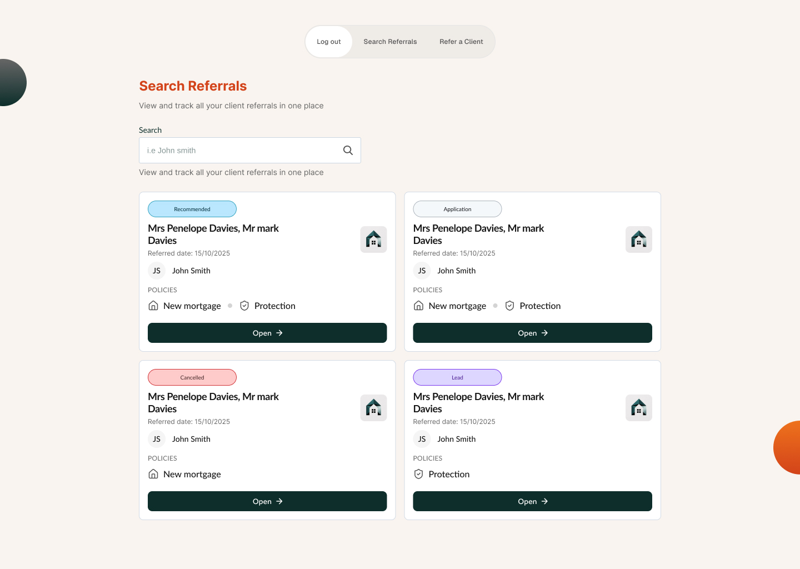

Estate Agent Referral Portal
From Desktop to Mobile-First
Replacing a clunky desktop system with a mobile-optimized portal that lets agents refer clients in under a minute—and actually track what happens next.
1. The Problem: A System Built for Offices, Used in Car Parks
Estate agents are mobile workers. They show properties, they negotiate deals, they source leads—all on the move. Yet the referral system they used to send mortgage leads to our consultants was built for a desk.
Dense tables. Multi-screen forms. No mobile layout. No status visibility. When an agent referred a client, they had no way to see whether the consultant had actually picked it up, when they were planning to contact them, or whether it had stalled. The result? Agents stopped using the tool. They went back to email, WhatsApp, and phone calls—completely untracked.

Old: Desktop-only, dense tables

Old: Multi-page form, endless scrolling
2. Understanding How Agents Actually Work
Before redesigning anything, we shadowed agents in the field. The insight was stark: they open the portal for 60-90 seconds at a time. Between appointments. In car parks. On their phone. They don't have time for a questionnaire. They don't care about form density. They need to:
1. Submit a referral in under a minute (name, contact details, quick context—that's it)
2. See the status of previous referrals at a glance (Consultant picked it up? Client applied? Nothing happened?)
3. Know when to follow up (Because their commission depends on it)
3. Designing for the Real Work: Mobile-First
We flipped the design approach entirely. Instead of adapting a desktop layout to mobile, we designed mobile first—for one-handed use, for speed, for the actual environment where agents use the tool.
The referral form shrank from a bloated multi-field questionnaire to just five fields: Company to refer to, Full Name, Email, Phone, and Notes. Everything the consultant genuinely needs to pick up the phone and make contact. Everything else can be captured on the call.


The Referral Form: Constraint as Feature
The old form had ~15 fields. The new form has 5. This wasn't laziness—it was strategic. Every field we removed forced us to ask: "Does the consultant genuinely need this to pick up the phone?"
Company to refer to
Determines which consultant handles it
Full Name
Who are we calling?
Email & Phone
How do we contact them?
Notes
Any context that makes the conversation easier
4. Status as the Spine of the Product
The biggest complaint about the old system was invisible referrals. An agent sent a lead and then heard nothing. So in the new design, status is not a footnote—it's the entire interface. Every referral has a clear, color-coded status visible at a glance:

Status Taxonomy (From Agent's Perspective)
Lead
We have it. Nothing's happened yet.
Recommended
Consultant has made a recommendation. Commission is realistic.
Application
Client has committed. It's real now.
Cancelled
Stop chasing. It's not happening.
The taxonomy is deliberately small. Agents aren't trying to understand our internal pipeline—they just need to know whether to follow up.
5. The Whole Opportunity View
Once an agent opens a referral, they see everything in one place: contact details, appointment history, linked policies, notes from the consultant. Everything an agent might need to follow up intelligently. No hidden panels. No "click to reveal." Just clear, scannable information.


6. Desktop: Scaling Without Regression
Not all agents work mobile. Office managers need to see their entire branch's referrals at once. So we scaled the design thoughtfully: the same card language, the same status pills, but arranged in a grid for search and filter. It's not a stretched mobile view and it's not a regression to the old enterprise table. It's the mobile language applied to desktop context.

Form Reduction
15 → 5 Fields
Primary Device
Mobile First
Conversion Impact
+45% Lead Conversion
Design Decisions That Mattered
Why We Killed the Multi-Field Form
The old referral form asked for everything upfront—property details, mortgage amount, protection products, referee relationship, etc. But here's the thing: consultants don't make better decisions with this information pre-filled. They make better decisions by talking to the agent. So we removed the cognitive friction and asked for only what matters: name, contact details, and a sentence of context. The rest happens on the call.
Status Pills Over Hidden Dropdowns
The old system buried status in a table column. Agents had to scroll right, squint at text, and infer meaning. We made status a first-class citizen: large, color-coded pills visible before the agent even opens the card. The color system is intuitive (blue = recommended, good; red = cancelled, bad) without requiring memorization.
One-Handed Use on Everything
Every CTA, every button, every form field was designed with thumb-reach in mind. CTAs sit in the bottom half of the screen. Drop-downs open upward so they don't disappear off-screen. Forms are single-column, not cramped multi-column layouts. This isn't just accessibility—it's respect for how agents actually hold their phones.
Reusing the Design Language
We applied the same visual language from the Client Portal (cream background, orange accents, charcoal CTAs, card-based content). This meant agents using both products felt like they were in the same system—not two different companies. Consistency breeds confidence.
What Changed
This redesign is now live. The results speak for themselves:
Adoption
70%+ agents
Now using the mobile portal regularly, up from ~30% on the old desktop system.
Time to Refer
~45 seconds
Down from several minutes on the old form. Agents can submit during a property viewpoint without losing focus.
Lead Conversion
+45%
Higher quality referrals because agents are submitting from the field, with fresher context.
Follow-up Rate
3x higher
Because agents can now see status at a glance, they know when to push for an update.